| 新規作成 |
現在のグラフを破棄して新しいグラフを作成します。
現在のグラフにグラフを追加するのは[オブジェクト]-[軸]-[追加作成]メニューです。
|
| 開く |
保存してあるグラフファイル(NGPファイル)を読み込みます。
DOS 版 Ngraph の PRM ファイルは load PRM アドインを使用して読み込んでください。
|
| 名前を付けて保存 |
現在のグラフに名前をつけて保存します。
|
| 保存 |
現在のグラフを保存します。
|
| 画像にエクスポート |
GRA, PostScript, EPS, SVG, PDF, PNG の各形式のファイルを出力します。
|
| 描画順 |
描画するグラフィックスオブジェクトを指定したり、描画順を変更します。
|
| ページ |
用紙のマージンや、全体の拡大率、小数点記号等を指定します。
|
| 印刷プレビュー |
プレビュー表示を行います。
|
| 印刷 |
印刷します。
|
| 現在のディレクトリ |
現在のディレクトリを変更します。
|
| アドイン |
ちょっとした機能を持った副プログラムを実行します。
アドインを参照してください。
|
| Ngraphシェル |
Unixの sh ライクなシェル(コマンドインタープリターの様なもの)を起動します。
|
| 終了 |
Ngraphを終了します。
グラフに変更が加えられていて保存されていない場合には保存するかどうか問い合わます。
|
| 元に戻す |
直前の操作を元に戻します (「グラフ」メニューの「描画順」と「ページ設定」は元に戻せません) 。
|
| やり直し |
元に戻した操作をやり直します。
|
切り取り
コピー |
選択した legend, merge オブジェクトに対して「切り取り」または「コピー」
を行います (axis オブジェクトの切り取り、コピーはできません) 。
|
| 貼り付け |
クリップボードに保存されている文字列または legend, merge オブジェクトを
貼り付けます。
|
| 削除 |
選択したオブジェクトを削除します。
|
| 複製 |
選択したオブジェクトを複製します。
|
| すべて選択 |
オブジェクト選択モードにより動作が変わります。
- グラフィックスオブジェクト選択モード
- すべての軸、レジェンド、マージオブジェクトを選択状態にします。
- レジェンド選択モード
- すべてのレジェンド、マージオブジェクトを選択状態にします。
- 軸のみの選択モード
- すべての軸を選択状態にします。
|
| 位置合せ |
選択したオブジェクトの位置合せを行います。
|
90° 時計回り回転
90° 反時計回り回転 |
選択した legend, axis オブジェクトを回転します (merge オブジェクトは回転
できません) 。mark オブジェクトは回転により位置のみ変化します。
|
水平反転
垂直反転 |
選択した legend, axis オブジェクトを反転します (merge および text オブジェ
クトは反転できません) 。mark オブジェクトは反転により位置のみ変化します。
|
| ビューア |
グラフの解像度などを指定します。
ダイアログの[OK]ボタンを押した場合はプログラム終了時に設定の変更は保存さ
れません。[保存]ボタンを押した場合は次回以降の起動時にも設定の変更が有効に
なります。
|
| 外部ビューア |
外部ビューアの解像度などを指定します。
ダイアログの[OK]ボタンを押した場合はプログラム終了時に設定の変更は保存さ
れません。[保存]ボタンを押した場合は次回以降の起動時にも設定の変更が有効に
なります。
|
| フォント |
目盛数字やレジェンドテキストで用いられるフォントの追加や削除をします。
ダイアログの[OK]ボタンを押した場合はプログラム終了時に設定の変更は保存さ
れません。[保存]ボタンを押した場合は次回以降の起動時にも設定の変更が有効
になります。
|
| アドインスクリプト |
新しいアドインを追加したり、削除したりします。
ダイアログの[OK]ボタンを押した場合はプログラム終了時に設定の変更は保存さ
れません。[保存]ボタンを押した場合は次回以降の起動時にも設定の変更が有効に
なります。
|
| その他 |
エディターを指定したり、グラフの保存方法のデフォルト値を変更したりします。
ダイアログの[OK]ボタンを押した場合はプログラム終了時に設定の変更は保存さ
れません。[保存]ボタンを押した場合は次回以降の起動時にも設定の変更が有効に
なります。
|
| 初期状態としてセーブ(各種設定) |
次にNgraphを起動した時も上の設定変更が有効になるよう各種設定を保存します。
|
| 初期状態としてセーブ(グラフ) |
現在のグラフを初期状態となるようにします。配布状態ではフレームグラフが初期状態です。
またここで保存された軸の設定は軸の新規作成の際に反映されます。
|
| データファイル初期状態 |
データダイアログボックスの初期状態を変更します。
|
| レジェンドテキスト初期状態 |
レジェンドテキストの初期状態を変更します。
|
| ファイル名 |
データファイル名。
|
| ファイルから設定読込 |
データファイルの先頭に設定パラメターが記述されている場合に、そのパラメターを取り込む。
データファイルへの設定パラメターの記述の方法はデータファイル埋め込みオプションを参照。
|
| 編集 |
データファイルを編集するためにエディターを開く。
起動されるエディターは[設定]-[その他]メニューで変更可能。
|
| Xカラム |
横軸として使用するデータの、データにおけるカラム数。
0の時は 1,2,3,... がデータとなる。
|
| X軸 |
横軸として使用する軸。
|
| Yカラム |
縦軸として使用するデータの、データにおけるカラム数。
0の時は 1,2,3,... がデータとなる。
|
| Y軸 |
縦軸として使用する軸。
|
表
Plain |
データプレビューの表示形式。
|
|
プロット
|
| タイプ |
mark, line 等のプロットする方法。
|
| マーク |
タイプが mark の時にプロットに使われるマークの種類。
|
| 曲線 |
タイプが curve の時に使われる補間方法。
spline(スプライン補間), spline_close(閉スプライン補間), bspline(Bスプライン補間), bspline_close(閉Bスプライン補間)。
Bスプライン補間を使うにはデータ数が7点以上必要。
|
| フィット |
タイプが fit の時にフィッティングの方法を指定するダイアログボックスを開く。
タイプを fit にしたら必ず一度はこのボタンを押してフィッティング方法を指定しないと、
描画時に `fit' is not specified のエラーになる。
|
| 色1 |
プロットする線、マーク等の色。
|
| 色2 |
タイプが mark, rectangle_fill, bar_fill_x, bar_fill_y の時の第2色。
|
| クリップ |
チェックしない状態では、データは軸の外側にもプロットされる。
|
| 線種 |
プロットする線の種類。
点線の長さ、間隔を詳細に指定するには、"100 10" の様に点線の繰り返し要素の長さを指定する。
|
| 線幅 |
プロットする線の幅。
|
| サイズ |
マークの大きさ、エラーバーのバーの長さなどのサイズ。
|
| マイター |
マイターリミット。折れ線の角で輪郭をどこまで描画するかを決める。
|
| ジョイン |
折れ線の角の輪郭形状。
|
|
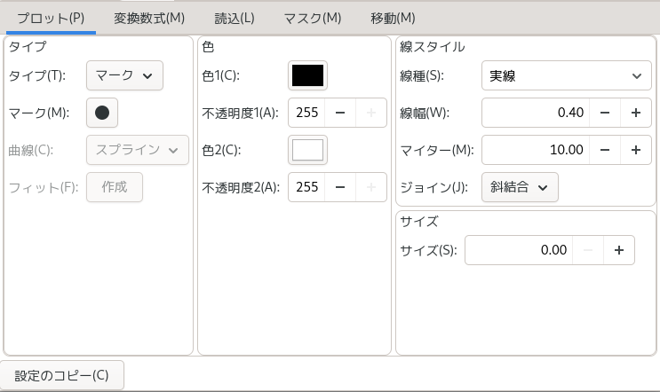
|
|
| 変換数式 |
| 隣接平均 |
隣接平均するデータ数。1 の時、前後1つのデータと合わせて3つのデータの平均がとられる。
|
| 平均化手法 |
隣接平均の計算手法を選択する。
|
| 変換数式 |
データを数式で変換してプロットしたい場合の変換式。
|
F(X,Y,Z)=
G(X,Y,Z)=
H(X,Y,Z)= |
ユーザ定義関数。ここで定義した関数が、変換数式中で F(), G(), H() として使用できる。
|
一行入力
複数行入力 |
変換数式とユーザ定義関数の入力方法を選択する。
|
|
|
| 読込 |
| 先頭スキップ行 |
データの先頭で読み込みをスキップさせる行数。
|
| 読込ステップ行 |
2の時、データは一行おきに読み込まれる。
|
| 最終行 |
読み込みを停止させる行。負の場合データ最後からの行数になる (-1 でデータの最後まで読み込まれる) 。
|
| コメント行 |
ここで指定した文字で始まる行はコメント行とみなされ読み込まれない。
|
| 区切り文字 |
データの区切りとして使用される文字。デフォルトはスペース、タブ、コンマ、括弧。
|
| CSV形式 |
これをチェックすると、スペース以外の「区切り文字」が連続した場合、連続した数だけデータが無いものとして扱われる。
|
|
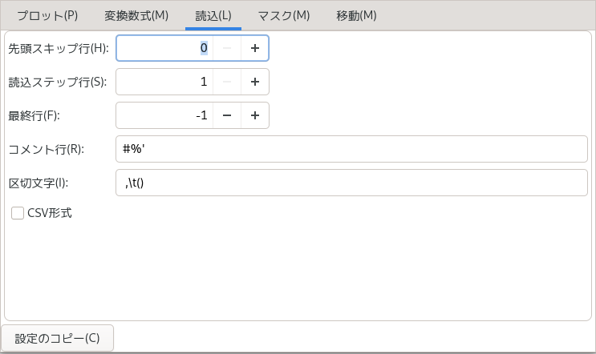
|
|
| マスク |
| 追加 |
「新規行」に指定したデータ行をマスクとして追加する。
マスクの追加はモードを用い、マウスでプロットされたデータを指定することでも可能。
|
| 削除 |
「マスク行」リストの中で選択したデータ行のマスクを解除する。
|
|
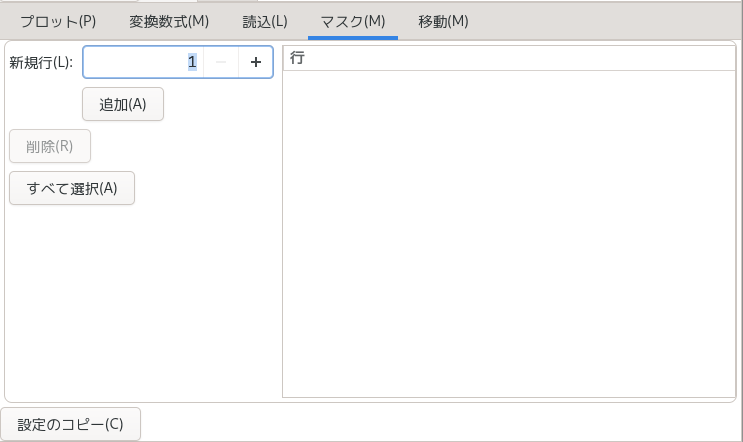
|
|
| 移動 |
| 追加 |
「新規行」に指定したデータ行のデータを「X, Y」で指定されるデータとして解釈するように「移動行」リストに追加する。
データの移動はモードを用い、マウスでプロットされたデータを指定することでも可能。
|
| 削除 |
「移動行」リストの中で選択したデータ行のデータ移動を解除する。
|
|
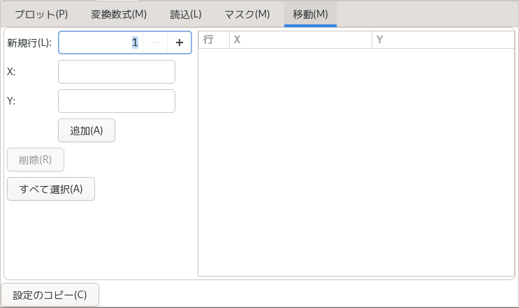
|
|
| 全てに適用 |
データ選択ダイアログボックスで、複数のデータを指定した場合、
これ以降のデータに対しては現在の設定を用いる。
|
| 設定のコピー |
それぞれのタブで設定するパラメータを他のデータから取り込む。
|
| 種類 |
フィッティングの種類。多項式, べき関数 (y=a*x^b), 指数関数 (y=exp(a*x+b)), 対数 (y=a*log(x)+b), ユーザ定義(ユーザ定義式によるフィット)から選択。
|
| 多項式次元 |
種類がpolyの時の多項式の次数。
|
| 通過点 |
チェックすると「X, Y」に指定した点を通る条件付きでフィットが行われる。
種類が user に場合に、このオプションは指定できない。
|
| 重み付け |
データに重み付けをしてフィットする。数式変換と
同様の関数が使用できるが、データパラメータ %Fxxxx や F(),
G(), H(), COLOR(), MARKSIZE() 関数などは使用できない。通常のフィットは、
重み付け 1 に対応する。
|
| 最小、最大、分割 |
フィット結果の描画法を設定する。
フィット結果式のXの値を、「最小」から「最大」までを「分割」数だけ分割して評価して Y の値を求めて直線で結ぶ。
「最大」「最小」が共に 0 の時は X 軸の最小と最大が用いられる。
|
| 補間 |
チェックしてある場合、フィット結果は直線の集まりではなく、スプライン補間して曲線で描画される。
|
| フィット式 |
種類が user の時にフィットに用いられる式。
%01から%09までがフィットで求められるパラメターとなる。
|
| 収束 |
種類が user の時、収束条件を % で指定する。デフォルトでは 1% なので、フィット結果は1/100 の精度となる。
|
| 微分式指定 |
チェックしてある場合、微分式を使ってパラメター微分の値を計算する。
チェックしていない場合、数値的にパラメター微分の近似値を計算する。
|
| %00-%09 |
種類が user の場合にはフィッティングパラメターは繰り返し処理で求められるが、その繰り返し処理の初期値を指定する。
フィット関数によっては、フィッティング結果に近い値を入れないと収束しない。
|
| dF/d(%00)-dF/d(%09) |
フィット式をフィッティングパラメター%00-%09で偏微分した式。
「微分式指定」をチェックした場合に指定する必要がある。
|
| 結果表示 |
フィット結果を表示する。
|
| Copy |
他のデータのフィット設定を取り込む。
|
| 設定読込 |
保存してあるフィット設定を読み込む。
|
| 設定保存 |
現在のフィット設定を保存する。後で読み込む際に区別がつくように「プロファイル」を指定する。
設定は fit.ngp の名前のファイルに保存される。
|
| スケール |
| 最小値、最大値 |
軸のスケールの最大と最小。
「最小値」「最大値」「増分」の全てが 0 の時、スケールは未設定状態とみなされ描画時に自動的に設定される。
|
| 増分 |
目盛数字は「増分」の値毎に付けられ、目盛線は「増分」を「分割数」だけ分割した値毎に付けられる。
「スケール法」が log の時、「増分」が10 では 10, 100, 1000 の様に目盛数字が付けられ、
「増分」が 1 の時には 1, 2, 3 の様に目盛数字が付けられる。
|
| スケール法 |
linear(通常の線形軸), log(対数軸), inverse(逆数軸), MJD(軸の値を MJD
として日時で表示) から選択。
|
| クリア |
スケールを未設定状態(「最小値」「最大値」「増分」の全てが 0)にする。
|
| データ |
指定したデータでスケールを自動設定する。
|
| 分割数 |
「増分」を更に分割する分割数。
|
| 参照軸 |
スケールが未設定状態(「最小値」「最大値」「増分」の全てが 0)の時、ここに指定した軸の設定が代わりに使われる。
|
| オートスケール余白 |
オートスケール時の余白を % で指定します。
|
|
|
|
| 軸基線 |
| 基線描画 |
チェックを外すと軸の基線を描画しなくなる。
|
| 線種 |
基線の種類。
点線の長さ、間隔を詳細に指定するには、"100 10" の様に点線の繰り返し要素の長さを指定する。
|
| 線幅、色 |
基線の幅と色。
|
| 矢印、波型 |
軸基線の端には矢印や波型を付加することができます。矢印は交差グラフの軸に、波型は２つの軸を使って分断された軸を表現するのに使う。
矢印の「長さ」と「幅」は、基線の「線幅」に対して % で指定する。
|
|
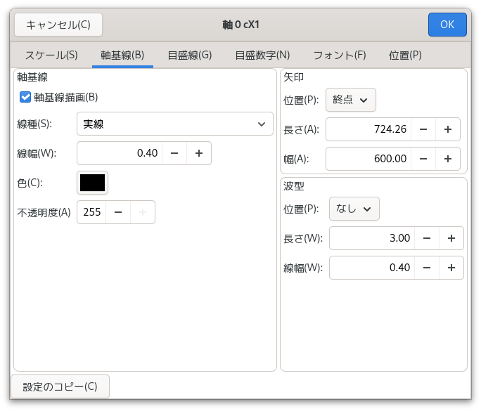
|
|
| 目盛線 |
| 位置 |
none(目盛線なし), right(軸基線の右回り方向), left(軸基線の左回り方向), both(両側)から選択。
|
| 範囲最小値、範囲最大値 |
目盛線を付ける軸スケールの範囲を指定する。両方共に0の時は、軸全体に目盛が付けられる。
|
| 線種 |
目盛線の種類。
点線の長さ、間隔を詳細に指定するには、"100 10" の様に点線の繰り返し要素の長さを指定する。
|
| 色 |
目盛線の色。
|
| 長さ1, 2, 3 |
目盛線の長さ。目盛線のスケールの細かい方から幅1, 2, 3とする。
|
| 線幅1, 2, 3 |
目盛線の幅。目盛線のスケールの細かい方から幅1, 2, 3とする。
|
|
|
|
| 目盛数字 |
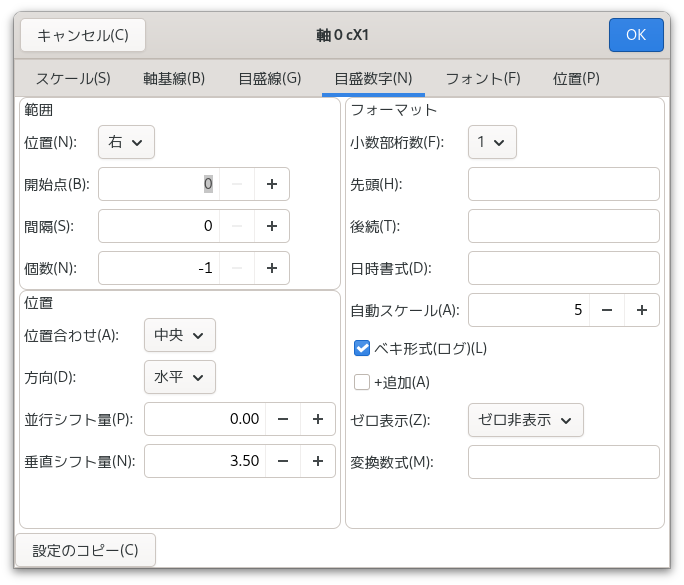
| 位置 |
none(目盛線なし), right(軸基線の右回り方向), left(軸基線の左回り方向), both(両側)から選択。
|
| 開始点、個数 |
目盛数字はスケールの「増分」(あるいはその整数倍)毎に付けるが、何番目から付けるかを「開始点」で、
付ける個数を「個数」で指定する。
「開始点」が0で初めから付けられ、「個数」が-1で最後まで付けられる。
|
| 間隔 |
目盛数字をスケールの「増分」の整数倍毎に付ける場合、その整数倍の値。
0で自動設定。
|
| +付加 |
目盛数字が0または正の値の時、+を必ず追加する。
|
| 小数部桁 |
目盛数字の小数部の桁数。
|
| 先頭 |
各目盛数字の先頭に付ける文字列。
|
| 後続 |
各目盛数字の後続に付ける文字列。
|
| 日時書式 |
スケール法が MJD の時の日時書式を指定する。利用できる設定につい
ては下記を参照。指定しない場合は、スケールの範囲から自動設定される。
|
| 位置合わせ |
center(中心揃え), left(左揃え), right(右揃え), point(小数点位置揃え)から選択。
|
| 方向 |
目盛数字の文字描画の方向。
|
| 平行シフト量 |
目盛数字の位置を軸基線に平行にずらす。
|
| 垂直シフト量 |
目盛数字の位置を軸基線に垂直にずらす。
|
| ベキ形式(ログ) |
対数グラフの目盛数字を 1, 10, 100 とするか 10^0, 10^1, 10^2 とするかの指定。
|
| ゼロ表示 |
0の目盛数字描画方法を選択する。
- 通常表示：
- 他の数値と同様に描画する。
- ゼロ非表示：
- 0の目盛数字を描画しない。X軸-Y軸の (0,0) をまとめて一つの 0 としたい場合に、このオプションを使って 0 を表示しないようにして、手動で 0 を入れる。
- 整数表示：
- 0の目盛数字を常に整数として描画する。
|
| 自動スケール |
目盛数字がここで指定する桁数より大きく(100000の様に)、あるいは小さくなった場合(0.00001の様に)には正規化され、[1x10^5] の様な凡例が軸に付けられる。
|
| 数式変換 |
目盛数値を指定した数式で変換して表示します。
|
|
"日時書式" で利用できる変換指定の文字は以下のとおり。
| %a | 曜日の省略名。 |
| %A | 曜日。 |
| %b | 月の省略名。 |
| %B | 月の完全な名前。 |
| %c | %a %b %e %T %Y と同等。 |
| %C | 世紀 (西暦年の上 2 桁)。 |
| %d | 月内通算日 (01-31)。 |
| %D | %m/%d/%y と同等。 |
| %e |
%d と同様に月内通算日を 10 進数で表現するが、 1 桁の場合 10 の位
にゼロを置かずスペースを置く。
|
| %F | %Y-%m-%d と同等。 |
| %G | ISO 8601 週単位表記の年。世紀も 10 進数で表す。
ISO 週番号 (%V を参照) に対応した 4 桁の西暦年。こ
れは基本的には %Y と同じ形式だが、ISO 週数が前年や
翌年になる 場合にはその年が使用される点が異なる。
|
| %g | %G と同様。但し、世紀を含まず下 2 桁のみを表示 (00-99)。 |
| %H | 24 時間表記での時 (00 to 23)。 |
| %I | 12 時間表記での時 (01 to 12)。 |
| %j | 年の初めから通算の日数 (001 to 366)。 |
| %k | 24 時間表記での時 (0-23)。1 桁の場合には前にゼロでなくスペースが置かれる。 |
| %l | 12 時間表記での時 (0-23)。1 桁の場合には前にゼロでなくスペースが置かれる。 |
| %m | 月 (01 to 12)。 |
| %M | 分 (00 to 59)。 |
| %n | 改行。 |
| %p | "AM" または "PM"。 |
| %P | "am" または "pm"。 |
| %r | %I:%M:%S %p と同等。 |
| %R | %H:%M と同等。 |
| %S | 秒 (00 to 60)。 |
| %t | タブ文字。 |
| %T | %H:%M:%S と同等。 |
| %u | 週の何番目の日 (10 進数表記) か。月曜日を 1 とする (1 to 7)。 |
| %U |
年の初めからの通算の週番号 (10 進数表記) (00-53)。 その年の最初
の日曜日を、第 1 週の始まりとして計算する。 %V と %W も参照する
こと。
|
| %V | ISO 8601 形式での年の始めからの週番号。 10 進
数表記で、01 から 53 の値となる。週番号は、 新しい
年が少なくとも 4 日以上含まれる最初の週を 1 として
計算する。 %U と %W も参照のこと。
|
| %w | 週の何番目の日 (10 進数表記) か。日曜日を 0 とする (0 to 6)。 |
| %W |
年の初めからの通算の週番号 (10 進数表記) (00-53)。その年の最初
の月曜日を、第 1 週の始まりとして計算する。
|
| %x | %D と同等。 |
| %X | %T と同等。 |
| %y | 西暦の下2桁 (世紀部分を含まない年) (00 to 99)。 |
| %Y | 西暦年。 |
| %z | +0000 |
| %Z | GMT |
| %+ | %a %b %e %T %Z %Y と同等。 |
| %% | '%' 文字。 |
|
|
| フォント |
| ポイント |
目盛数字の文字の大きさ(ポイント)。pt単位で指定。
|
| 文字間 |
文字の間を空けたいときに pt 単位で指定。
|
| スクリプトサイズ |
上付き、下付き文字を通常の文字の何パーセントにするかを %単位で指定。
|
| フォント |
目盛数字のフォント。
|
| 太字、斜体 |
フォントのスタイル指定。
|
| 色 |
目盛数字の色。
|
|
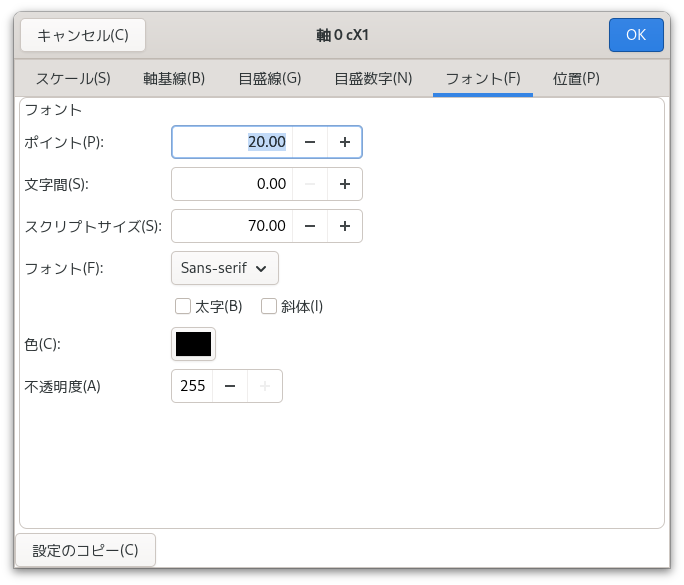
|
|
| 位置 |
| X, Y, 長さ、方向 |
軸の位置、長さ、方向を指定。通常の使用ではグラフ上でマウ
スを使ってグラフの位置、形状を変えるか、軸をダブルクリックして現
れるグラフダイアログボックスで変更するが、それではできない変更
(グラフを構成する軸を個別に変更したい場合等)をしたい時に指定する。
|
| 交差軸 |
交差グラフで交差するもう一方の軸。
|
| 交差位置 |
交差グラフでもう一方の軸と交差する位置をスケールの「増分」単位で指定する。0で自動設定。
|
|
|
|
|
共通項目
|
|
線種
|
線の種類。点線の長さ、間隔を詳細に指定するには、"100 10" の様に点線の繰り返し要素の長さを指定する。
|
|
線幅
|
線の幅。
|
| マイター |
マイターリミット。折れ線の角で輪郭をどこまで描画するかを決める。
|
| ジョイン |
折れ線の角の輪郭形状。
|
| 色 |
レジェンドの色。
|
|
|
パス
|
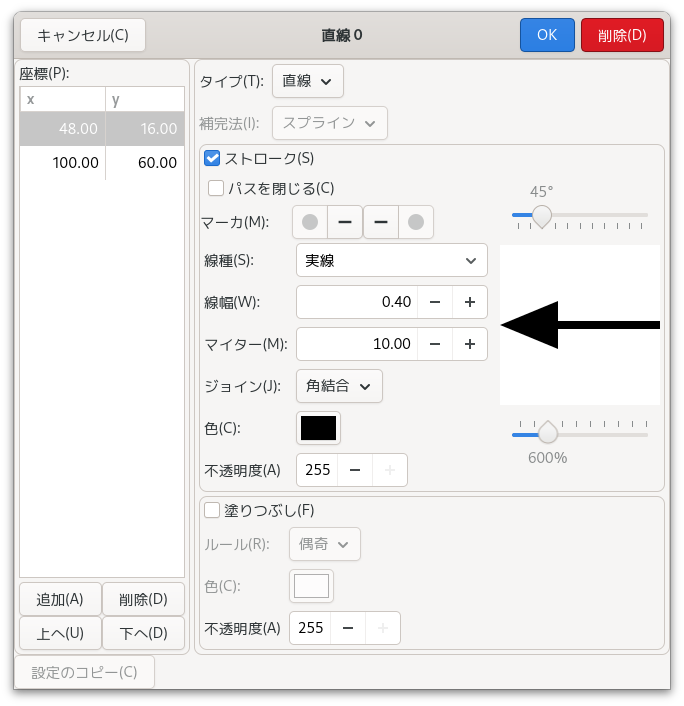
|
座標
|
直線、曲線、多角形の場合に点列の座標を指定する。「追加」「削除」のボタンで座標を追加または削除できる。また、行をドラッグすることで座標の順番を変えることができる。
|
|
タイプ
|
「直線」「曲線」から選択。
|
|
補間法
|
曲線の描画に使われる補間法。「スプライン」,「閉スプライン」,「Bスプライン」, 「閉Bスプライン」から選択。
Bスプラインを使うには座標点が7点以上必要。
|
|
ストローク
|
輪郭を描画する。
|
|
パスを閉じる
|
終点と始点を直線で結ぶ。
|
|
マーカ
|
直線の始点、終点にマーカを付加する。なし, 矢印, 波線, マーク, 棒から選択。
|
|
塗りつぶし
|
内部を塗りつぶす。
|
|
ルール
|
塗りつぶしの方法。even_odd_rule, winding_rule から選択。
|
|
スライダ
|
矢印の形状、大きさを指定する。上のスライダは矢尻の角度、下のスライダは矢尻の長さを線幅を単位にして指定する。
矢尻の形状はグラフィカルに表示され、先端の角度も表示される。
矢印以外のマーカには下のスライダの設定値だけが使われる。
|
|
|
|
四角形
|
|
X, Y
|
四角形の左上座標。
|
|
W, H
|
四角形の幅と高さ。
|
|
塗りつぶし
|
四角形の内部を「色」で塗りつぶす。
|
|
ストローク
|
四角形の輪郭を「色」で描画。
|
|
|
|
|
円
|
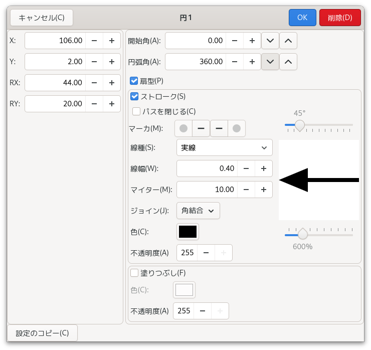
|
X, Y, RX, RY
|
円の中心座標(X,Y) とX方向半径 RX, Y方向半径 RY。
|
|
開始角、円弧角
|
円弧は「開始角」から反時計回りに「円弧角」だけ描画される。1度単位。
|
|
扇形
|
円の中心を円弧の端を結んだ扇形として描画する。
|
|
ストローク
|
扇形または弦形の輪郭を「色」で描画。
|
|
パスを閉じる
|
扇形の場合は円の中心を円弧の端を結んだ扇形として描画する。扇形
でない場合は円弧の端を直線で結ぶ。
|
|
マーカ
|
円弧の始点、終点にマーカを付加する。なし, 矢印, 波線, マーク, 棒から選択。
|
|
塗りつぶし
|
扇形または弦形として塗りつぶす。
|
|
スライダ
|
矢印の形状、大きさを指定する。上のスライダは矢尻の角度、下のスライダは矢尻の長さを線幅を単位にして指定する。
矢尻の形状はグラフィカルに表示され、先端の角度も表示される。
矢印以外のマーカには下のスライダの設定値だけが使われる。
|
|
|
|
マーク
|
|
X, Y
|
マークの中心座標。
|
|
マーク
|
マークの種類。
|
|
サイズ
|
マークのサイズ。
|
|
色1, 色2
|
マークの第一色「色1」と第二色「色2」。
|
|
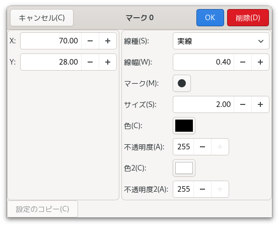
|
|
|
テキスト
|
|
X, Y
|
テキストの左下端(方向0の時)の座標。
|
|
テキスト
|
文字列中に制御文字を入れる事で、フォントを文字列単位で変えたりが可能。詳細はテキスト描画の制御文字を参照。
|
|
ポイント、文字間
|
文字のポイント数(pt単位)と文字間のスペース(pt単位)。
|
|
スクリプトサイズ
|
上付き文字、下付き文字を、通常の文字の大きさの何パーセントの大きさにするかを %単位で指定する。
|
|
フォント
|
使用するフォント。
|
| 太字、斜体 |
フォントのスタイル指定。
|
|
方向
|
文字列を描画する方向。1度単位。
|
|
Raw
|
テキスト描画の制御文字の機能を無効にし、「テキスト」の文字列をそのまま描画する。
|
|
|
|
|
ガウス関数
|
|
ガウス関数、ローレンツ関数、放物線、三角関数。
|
選択した関数形をもつレジェンド「曲線」を生成する。ダイアログボックスを閉じた時点で「曲線」に展開される。
|
|
分割数
|
曲線に展開する際に、関数形を何分割するかを指定。
|
|
上、下、左、右
|
関数形の方向。
|
|
スライダ
|
関数形を変更する。
|
|
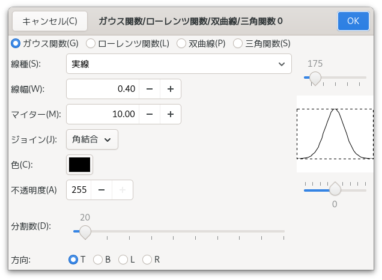
|
|
| エディター |
データダイアログボックスの「Edit」、Data タブのポップアップメニューの「Edit」で、データファイルを編集するために起動されるエディター。
|
| ヘルプ・ブラウザ |
ヘルプを表示するためのブラウザ。
|
| パス情報、データファイルを含める、合成ファイルを含める |
「グラフの保存」ダイアログボックスの初期状態を決める。
|
| パス情報、データファイルの展開、展開ディレクトリ |
「グラフの読込」ダイアログボックスの初期状態を決める。
|
| 補完履歴のサイズ |
テキスト、数式変換の入力補完のために保存される件数を指定する。
|
| Information 表示の行数 |
Information 表示の行数を指定する。
|
| データプレビューの行数 |
データ・ダイアログボックスに表示されるデータプレビューの行数を指定する。
|
| データプレビューのフォント |
データ・ダイアログボックスに表示されるデータプレビューのフォントを指定する。
|
| coordinate 表示のフォント |
coordinate 表示に使われるフォントを指定する。
|
| information 表示のフォント |
information 表示に使われるフォントを指定する。
|
| 「カレントディレクトリを移動」をチェック |
ファイルを選択するダイアログボックスを開いた時、「カレントディレクトリを移動」が初期状態でチェックされているようにする。
|
| 不透明度を使う |
グラフやレジェンドの色指定で透明度を使用するかどうかを設定する。
ただし、PostScript など不透明度に対応していないフォーマットにエクスポートする時は不透明度設定を使った部分がビットマップで出力されることがある。
|
| エクスポート時にデータ選択ダイアログを表示 |
画像にエクスポートする際にデータ選択ダイアログを表示するかどうかを指定する。
|
| カスタムパレットを使う、カスタムパレットの編集 |
色選択ダイアログで、独自の色を選択できるようにします。
|
| 数式変換入力の表示スタイル |
複数行入力の数式変換でつかう表示スタイルを選択する。
|
| 小数点記号の既定値 |
小数点に使われる記号の既定値を指定する。「ロケール」の場合はシステムの言語設定によって選ばれる。
|